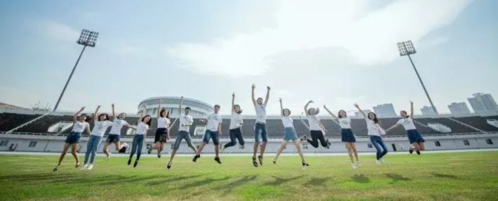

与晨韵文学社相遇，是一次偶然，那是在一次游园会上，我记不大清具体时间，但当时那帐篷前玩得火热的飞花令、接龙，以及社长那送各种小礼品的热情，让我深感与文学社投缘，之后加入文学社再到继续留在文学社，也成为必然。在社内，我收获的不只是主页君推送的好词好句和感触，更多的是遇见了一群爱文学、志同道合的朋友，以及一群同样可爱的师弟师妹们，这些珍贵的回忆，胜过千言万语。
蓝图职业发展协会 加入蓝图职业发展协会，最开始是因为师兄的推荐，但慢慢的我融入到职协的文化里，最终选择了留任。在社内，大一作为干事只是简单的值班，到了大二就要开始独当一面，要招新、要策划、要培训师弟师妹，过程不算辛苦但胜在乐在其中，我也是在这样的锻炼里从最开始什么都不会的小白晋升，也扩展了自身的人脉，结交了优秀的师兄师姐，也在一次访谈活动中见识了协会的优秀校友，愈参与，也愈感慨自身的不足，所以若有机会，我愿继续在蓝图职协大展蓝图。